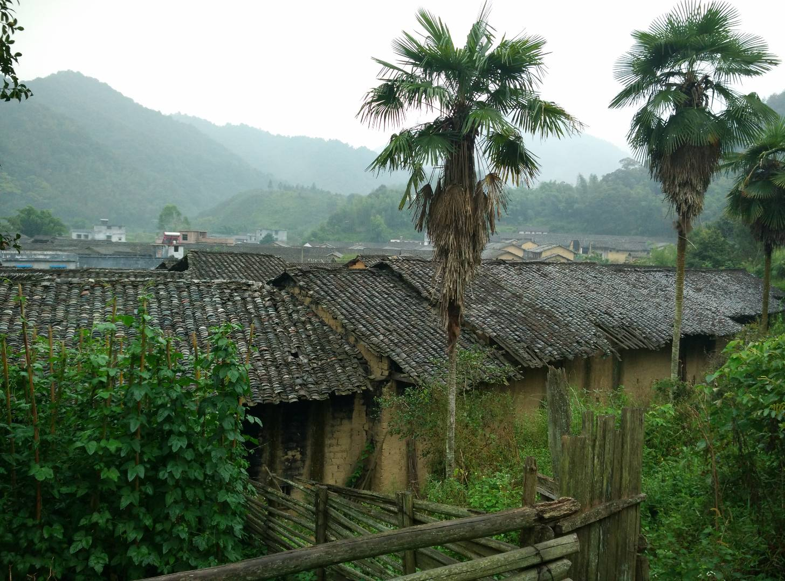
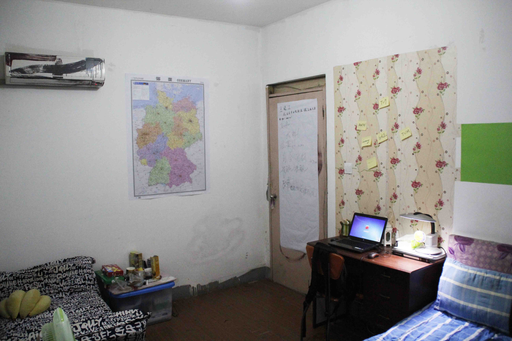
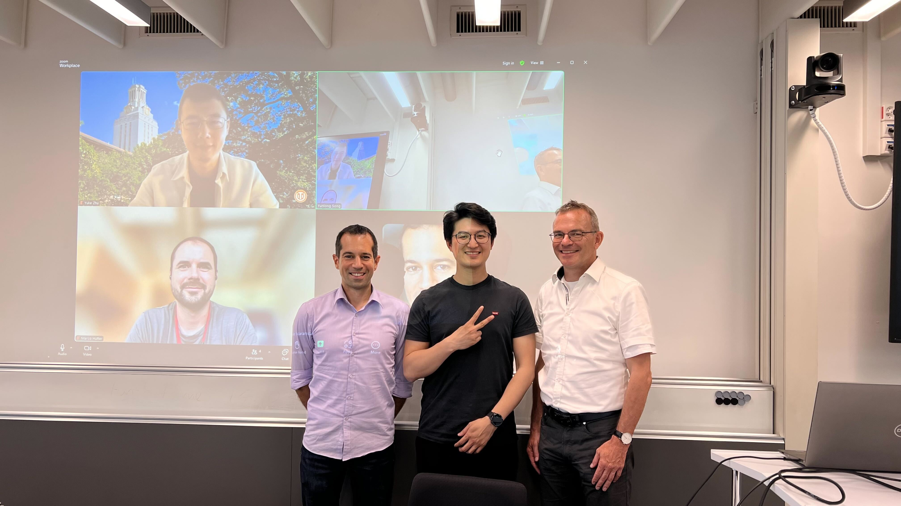

Journey to the Robotics
Childhood: Rice, Salted Vegetables, and Books

Since 2018, robotics learning and competitions have occupied most of my spare time. I come from a remote pastoral region—an underdeveloped nomadic area where, from a very young age, I lived amidst frequent sandstorms, unreliable transportation, and a harsh natural environment. In my hometown, people made their living through herding, and the landscape in spring and autumn was dominated by yellow dust, while winter brought nothing but the biting cold and snowy winds from Siberia. During those formative years, I was fortunate enough to catch a glimpse of the pan-Asian Robocon robotics competition on the news. Deeply inspired, I vowed to change this reality—to empower my community to embrace intelligent, technology-driven living, free from the constraints of nature. Fueled by that vision, I worked tirelessly in every exam at the village, county, city, and provincial levels, eventually earning admission to the best high school in Inner Mongolia. The year 2018, my freshman year, became the turning point of my life.
That same year, as part of the first—and only—robotics team in the history of Inner Mongolia, I participated in the FIRST Tech Challenge (FTC) youth robotics competition—sponsored by Qualcomm and Google. I traveled across China to events in Xi’an, Zhengzhou, Shanghai, and Suzhou, and even had the opportunity to compete on the world stage at the World Championship in Houston. There, I met people from every corner of the globe and forged deep bonds with international friends during the final competition. In that moment, the seed of a lifelong passion for robotics was irrevocably planted in my heart.
In the winter of 2019, I was honored to be among the few high school students invited to DJI’s robotics winter camp at their headquarters. There, I was introduced to competitive robotics in an adversarial setting, systematic robot fabrication, embedded systems, and visual algorithms. This invaluable experience not only enriched my technical foundation but also ignited the dream of establishing my very own robotics laboratory and team. I met inspiring peers from across the country and senior engineers from DJI—many of whom are now rising stars pursuing PhDs at top institutions or making groundbreaking contributions at companies like SpaceX, Apple, DJI and even founding multi-million-dollar unicorn startups.
I was the only one in my village who made it to high
school that year. I had one mission: to spend three years preparing
for the GaoKao, the University Entrance Exam. The
competition was real.
After my GaoKao, I took a job at a local factory while waiting for the
results. Then, on the day the scores were released, a friend called me with the
news while I was making souvenir products. I had made it. I could go to college—a good one.
Shanghai: College, Gap Year
 The distance between my county and Shanghai is more than 1,000 kilometers. It took a train more than 16 hours. I was both exhausted and excited. When the train arrived at Shanghai South Railway Station, a voice echoed over the speakers: "Welcome to Shanghai." I looked around, searching for the Oriental Pearl Tower and Jinmao Tower, but I couldn’t see them. At my university dormitory, I shared a room with three new friends—two from Shanghai and one from Shanxi. They were cool and confident. It was time to explore. Time flew by, the excitement faded, replaced by uncertainty. I had no idea what to do after graduation. My roommate often talked about studying abroad. "That must be very expensive," I said. "Not if you go to Germany," he replied. "Education is free there." Wait… free? That night, I called my father. "Dad, I want to go to Germany." "Germany? How much money do you need?" he asked. I did a quick calculation. "Not more than 150,000 chinese yuan." "OK," he said. I took a gap year to prepare for Germany. Taking a gap year wasn’t easy. I could no longer stay in my dormitory, so I had to rent an apartment—an overwhelming expense for a student with no income. I putted a map of Germany on the wall, reminding me of my goal. To support myself, I had to find a job, but it was in Shenzhen. I traveled south and started working there. I worked during the day and studied at night and on weekends.
Journey to the West: Germany, Switzerland, and USA

I did my Master's in Germany. Meanwhile, I was working part-time at a software company
and the university. I did my thesis on developing new reinforcement learning algorithms
for robot control. After graduation, I moved to Switzerland to pursue my PhD. Most of my
colleagues were top students from ETH. They have very sharp skills and mind, like the Swiss
knives. I learned a lot from them. I did my PhD on learning robot control based optimal control
and machine learning. "The work of Yunlong is stellar", said by Prof. Marco Hutter, ETH Zurich.
Allow me to quote Marco's comment about my thesis here to summarize my PhD work.
After my PhD, I moved to the USA to work as Research Scientist on developing new algorithms
for general-purpose robot control.
They say, "Ever tried. Ever failed. No matter. Try again. Fail again. Fail better." I tried so
many times, yet I failed so many times. I kept trying and learning. I am grateful for all the people who have
helped me along the way. Education was my key to the world. It opened many doors for me. I also understand
how hard it is to get a good eduction and how difficult it is to maintain continuous learning.
I hope I could help more people.
Journey still continues...